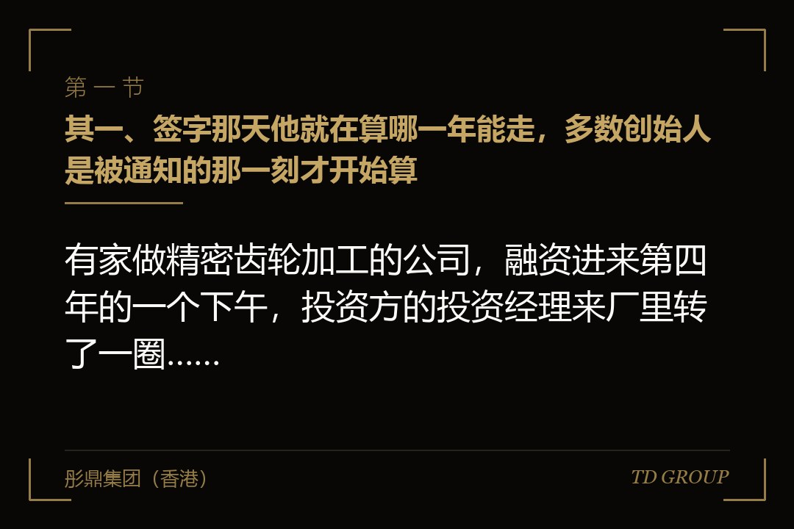
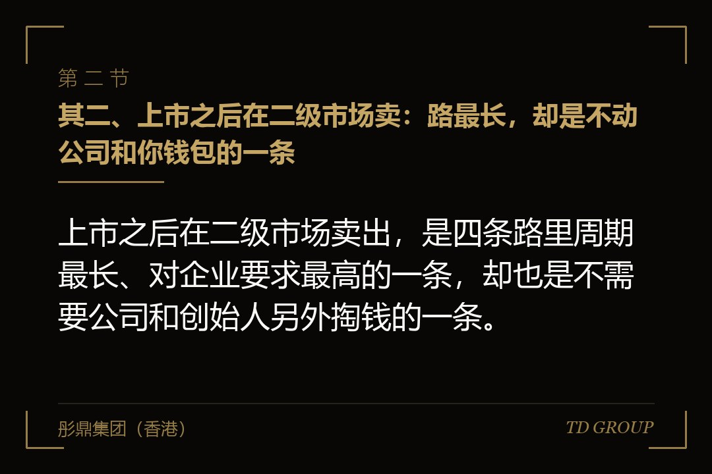
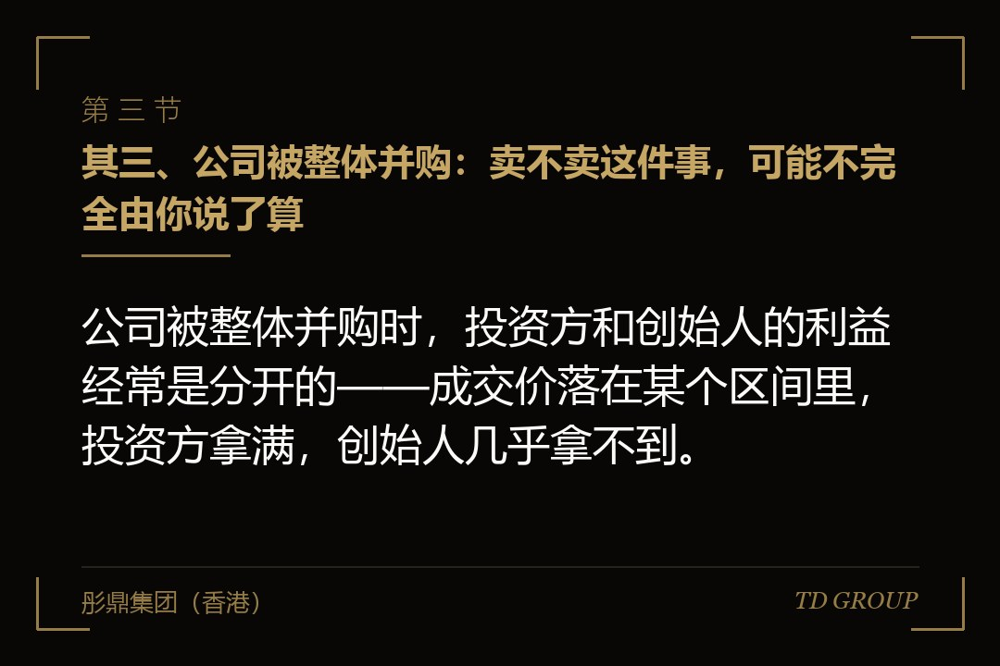

其一、签字那天他就在算哪一年能走，多数创始人是被通知的那一刻才开始算

有家做精密齿轮加工的公司，融资进来第四年的一个下午，投资方的投资经理来厂里转了一圈，聊完临走时问了一句：你们这边对退出有什么打算。
创始人当时把它当客套话，回了句"我们还在扩产能"。三个月后对方正式发了函，援引协议里的一条，要求公司或者他本人按约定价格把那笔投资买回去。他找律师翻协议，那条确实写在那儿，签字那天他也看过，只是当时觉得那是很久以后的事。
结论先行：财务投资方在签字那天就已经在算哪一年能退出，而多数创始人是在对方开口要走的那一刻，才头一次认真去算这条账。
这里有个认知差。创始人看融资，看的是"这笔钱进来能干什么"；财务投资方看同一笔交易，看的是"这笔钱几年后怎么变回现金"。两边看的是同一份协议，关注的却是文件的两头——一头是交割，另一头是退出。
而退出这件事，路就那么几条，不会因为公司做得好就多出一条来：上市之后在二级市场卖、公司被整体并购、把老股转让给愿意接的人、由公司或创始人按约定回购。区别不在名称，在于要花多久、这笔钱由谁掏、走到哪一步会卡住。
把这四条并排摆开看，有件事会立刻变得很清楚：它们对创始人的意义完全不同。有一条基本不动公司和创始人的钱包，有两条要靠外部买家点头，还有一条的钱只能从公司账上或者创始人自己名下出。这个差别，本该在他进来之前就摊开谈一遍。
其二、上市之后在二级市场卖：路最长，却是不动公司和你钱包的一条

结论先行：上市之后在二级市场卖出，是四条路里周期最长、对企业要求最高的一条，却也是不需要公司和创始人另外掏钱的一条。
它为什么是财务投资方心里最想要的路，原因有三个，都很实际。价格由公开市场给，不用跟创始人一轮轮谈判；卖出可以分批做，不必一次性找到一个能吞下全部股权的买家；金额上限也不由某一个交易对手的钱包决定。
但它同时是投资方最说了算不了的一条。上市要过监管审核、要有可用的发行窗口、要有连续几年经得起查的财务与合规底子，这几样里没有一样是他能替公司完成的。他能做的只是在协议里写一句"公司应尽合理努力在若干年内完成合格上市"，然后等。
有家做医用敷料的公司就卡在这儿。产品线扎实，两轮融资都很顺，报材料的那一年赶上行业估值往下走，发行窗口没等到，材料反复更新了两次。等到公司真正具备条件，最早那支基金已经到了必须往回收钱的时候，只能改走别的路。
还有一层容易被忽略：上市那一天并不等于投资方当天就能卖。挂牌之后有一段时间他的股份是动不了的，之后卖出的节奏也受规则约束——这两件事另有专文。从"公司上市了"到"这笔投资真的变回现金"，中间还隔着一段不短的时间。
所以这条路的真实画像是：周期通常按五到七年这个量级去估，是所有路径里最长的；能走通的公司比例并不高；但一旦走通，公司账上不会因此少一分钱，创始人名下也不会因此背上任何东西。四条路里，只有它具备这个性质。
其三、公司被整体并购：卖不卖这件事，可能不完全由你说了算

结论先行：公司被整体并购时，投资方和创始人的利益经常是分开的——成交价落在某个区间里，投资方拿满，创始人几乎拿不到。
这条路的好处很直接：一次交易把所有股东的退出问题一起解决，不用等窗口，也不用分批卖。所以基金到了后半程，投资方推动整体出售的意愿往往比推动上市更强。
分歧出在钱怎么分。多数融资协议里，投资方那部分股权在公司被出售时享有优先分配的安排——成交价先按约定分给他一段，剩下的才轮到普通股。这套安排的具体算法另有专文，这里只需要知道后果：成交价落在某个区间里，投资方连本带约定回报拿满，而创始人手上那些股份分到的可能接近于零。
更关键的是"卖不卖"这个决定权。不少协议里有一条安排：持有一定比例的股东决定出售公司时，其余股东有义务按同样条件一起卖。它的本意是让买家能拿到全部股权、交易做得成，但落到创始人身上就是——他可能会在自己并不想卖的时候，被要求一起签字。这一条的边界与谈判空间另有专文。
有家做跨境电商海外仓的公司走到过这一步。创始人自己判断再做两年估值能翻上去，最早那轮投资方已经等不了，推动引进一个产业方整体收购。最后价格谈成的那个数字，付完优先分配那一段，创始人和早期员工手上的股份分到的很有限，而他还被要求留任三年、绑上业绩条件。
所以这条路对创始人的真正含义是：它解决的是投资方的问题，未必解决你的问题。签字之前值得看清的是两件事——优先分配那一段有多长，以及在什么条件下你会失去"不卖"的选择权。
其四、老股转让给下一轮或接盘方：发生得最多，也最少被谈明白
结论先行：老股转让是四条路里发生得最多的一条，也是最少在签字之前被谈明白的一条，卡点通常有两个：没人接，和接了也过不了其他股东那一关。
先说谁会接。常见的接手方有三类：下一轮的领投方，愿意在新增出资之外顺带买一部分老股把持股比例做上去；专门做老股交易的基金；以及有意提前锁定合作关系的产业方。这三类买家的判断逻辑各不相同，但有一个共同前提——公司估值得比上一轮高，或至少看得到往上走的路径。
这就带出了头一个卡点。估值不涨的时候，这条路基本是关着的。老股按什么价格转，参照的是最近一轮的定价；公司这两年增长放缓、上一轮估值给高了，接手方要么不接，要么只肯按打了折的价格接，而打折转让又会立刻影响到下一轮的定价基准。于是常常出现一种局面：所有人都同意应该有人来接，但谁都不愿意做那个定价的人。
第二个卡点在公司内部。多数股东协议里写着优先购买权——老股要卖，得先按同样条件问过其他股东要不要买；有的还叠加共同出售权，即其他股东有权按比例跟着一起卖给这个买家。这些安排本身是保护性的，但它意味着一笔老股转让在真正签约之前，要先跑完一轮内部程序，时间通常以月计。老股转让本身的操作细节另有专文。
有家做城市固废资源化的公司在这一环上耽误了大半年。早期一位财务投资方找到了愿意接手的产业方，价格也谈得差不多，结果内部程序走了两轮——先是有股东表示要行使优先购买权、拖了一个多月最后没买，接着另一位股东要求按比例跟着一起卖，买家的出资额度又不够，只能重新谈。
其五、回购：名义上最干净，实际上是最贵的一条
结论先行：回购名义上最干净，实际上是四条路里最贵的一条，因为这笔钱只有两个来源——公司账上的现金，或者创始人个人名下的财产。
协议里的回购条款通常长这样：出现约定的情形时，投资方有权要求公司或者创始人按事先约定的价格把股权买回去。触发情形常见的有几种：约定年限内没能完成合格上市、业绩指标没达到、出现重大违约或者信息不实。
先看钱从公司出的情况。公司拿自有现金买回自己的股权，等于把一笔本该投在产能、研发或者账期上的钱抽出来给了一个即将离场的股东。对一家还在往上走的公司，这一下伤的是经营本身；何况公司用什么钱、在什么条件下才能回购自己的股权，还受到公司法层面的约束，具体口径以当时有效的规则和主管机关的解释为准。
再看钱从创始人个人出。这种安排会把一个原本属于公司层面的商业结果，变成落在个人名下的债务，牵连到个人财产。它的成立条件、责任边界与常见误解另有专文，这里只强调一点：它和"公司回购"是两件性质完全不同的事，签字的时候必须分清楚自己签的是哪一种。
最现实的一层是：真到了要触发回购的那一天，公司多半正处在拿不出这笔钱的状态。回购条款被触发的场景，通常就是上市没做成、业绩没达到——而这两种情形对应的公司现金状况，恰恰是最紧的。所以在实务里，这条路走到最后往往不是真的把钱付了，而是双方回到桌上重新谈：展期、降价、换成分期，或者用它做筹码去推动前面三条路里的某一条。
回到开头那家做精密齿轮加工的公司。函发出来之后，双方前后谈了小半年，最终的结果不是公司掏钱回购，而是引进了一个产业方接走了那部分老股，价格比协议里的回购价低了一截，投资方接受了。这个过程里公司什么都没做错，只是从来没人提前算过这笔账。
其六、他为什么突然急了：这跟你今年做得好不好没什么关系
结论先行：投资方突然开始催退出，多半跟公司这一年经营得好不好没有关系，而是他背后那笔钱本身有一个写在合同里的到期日。
一支基金从设立到清算，中间有一个约定好的存续期。基金的出资人把钱交给管理人的时候，同时约定了什么时候要拿回去。所以到了后半程，管理人面对的不是"这个项目还能不能长大"，而是"这个项目必须在某年某月之前变回现金"。这条时间线的机制另有专文，这里只需要记住它的存在。
于是会出现一些从公司角度看很难理解的动作。公司今年增长得不错，投资方却在推动出售；某个条款过去几年从没被提起，某一天突然被援引；跟你打了三年交道、彼此很熟的那位投资经理换了人，新来的那位上手做的头一件事，就是把所有存续项目过一遍退出方案。
还有一种情形更隐蔽：同一支基金里别的项目出了问题，回收不达预期，管理人就会把压力转移到还活着的项目上——你这个项目做得越稳，越容易被排在前面处理，因为它是最容易变现的那一个。
理解这一层，对创始人有两个实际用处。头一个是别把它读成针对性的施压，那样谈判很容易一开始就走岔；第二个是可以据此判断对方的真实时间表——他还剩多久，直接决定了他能接受哪几条路。华尔街彤鼎俱乐部内部复盘过的多起退出僵局，追到根子上都不是价格谈不拢，而是双方对"还剩多少时间"的认知从一开始就没对齐。
所以正确的做法不是等他来找你，而是每年主动问一次：这笔钱的存续期还剩多久，你们内部现在倾向哪条路。这个问题问出口，成本是零，拿到的信息却能决定你未来两年的融资节奏和现金安排。
其七、下一轮签字之前，把这四件事问清楚
结论先行：下一轮签字之前要问清楚四件事——这笔钱还剩多久、协议写了哪几条退出安排、触发条件是什么、现金流扛不扛得住最难那条路。
头一件是时间。对方这支基金是哪一年设立的、存续期怎么约定、现在处在前半程还是后半程。这个问题在尽调阶段问出来完全正当，对方也不会觉得冒犯——毕竟他刚刚问了你三十个问题。知道答案之后，你才能判断他嘴里的"我们是长期资本"到底有多长。
第二件是条款清单。把协议里所有涉及退出的安排单独抄成一页：优先分配、共同出售的义务、优先购买权、回购、上市时限承诺。它们平时散在不同的文件和附件里，抄到一页上你才看得出它们是怎么互相咬合的——比如上市时限一到，同时打开的可能不止一个开关。
第三件是触发条件。每一条安排都要问到"在什么情况下它会生效"，并且把答案落成可以判断的句子。"未能完成合格上市"这几个字里，"合格"两个字指的是哪几个交易场所、多大规模、什么时点，如果不写清楚，将来的解释权就不在你这边。
第四件是压力测试。假设约定年限到了、上市没做成、对方要求按协议价格回购，那一年公司账上的现金、可动用的授信，加上创始人个人能承受的部分，够不够。算出来不够不代表这一轮不能签，而是说明有些条款现在就该改——改条款的成本，比几年后再谈低得多。
这四个问题都不需要专业工具，但需要有人把这一整套安排放在同一张纸上看。彤鼎在做融资诊断和股权架构体检时，通常会把公司现有协议里的退出条款按这个顺序拆一遍，再对着未来三年的现金流试算一次，很多在签字时看起来无关紧要的措辞，是在这个环节才显出分量的。
最后回到那句最朴素的话：投资方要退出，不是他变了脸，是他从进来那天起就带着一个时间表。本质上，创始人要做的不是防着这一天，而是在他进来之前就知道这一天长什么样、由谁掏钱、自己那时候站在哪个位置。